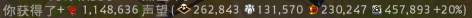

PvE聲望與怪物強度
關於PvE聲望的粗略計算，以及綠/藍/金洞的怪物強度。注意：本頁面類型為"研究中"，其內容極可能有誤，實際情況以遊戲內為主。
注意：本頁面部分資料測試地點在測試服(v1.21.000.236536)，實際情況以主服為主。
聲望的加成倍率
目前猜測的聲望計算公式：獲得的聲望 = 基礎聲望*階級倍率*聲望增益倍率*區域倍率*品質倍率*會員倍率*洞察背包倍率
| 基礎聲望 | 每種怪物的基本聲望，僅與怪物的種類有關。 | ||||||||||||||||||||||||||||||||
| 階級倍率 |
地圖等階會影響總聲望，如下表：(設T4圖的聲望為1倍)
|
||||||||||||||||||||||||||||||||
| 聲望增益倍率 |
擊殺大多數怪物時會跑出像這樣的聲望資訊：  最後面的
為聲望加成(聲望增益倍率 = 1.2)。
聲望增益種類如下表：
例：金洞神龕效果+T8騎士宣言+吃活動食物 聲望增益倍率 = (100% + 10% + 10%) * 1.15 = 1.2 * 1.15 = 1.38 目前沒有方法證明乘算的兩個聲望增益的關係 |
||||||||||||||||||||||||||||||||
| 區域倍率 |
區域類型會影響總聲望，如下表： [待驗證]阿瓦隆、迷霧
|
||||||||||||||||||||||||||||||||
| 品質倍率 |
綠/藍/金洞的品質會影響總聲望，如下表：(設品質.0的聲望為1倍) [待驗證]資源怪、城中城單劍怪、世界王雙劍怪
|
||||||||||||||||||||||||||||||||
| 會員倍率 |
如果擁有會員，會+50%聲望(1.5倍)，+50%這部分不計入個人資料裡的PvE聲望。
|
||||||||||||||||||||||||||||||||
| 洞察背包倍率 | 倍率由洞察背包的ip決定。 |
數值意義
以下的分析以金洞尾王(黑區T8.1)的聲望資料來算。
1. 怪物都有固定的基礎聲望，基礎聲望會先乘上階級倍率和聲望增益倍率：
-> 得到66,083聲望
2. 66,083聲望乘上區域倍率(4.2)和品質倍率(1.6589)：
-> 66,083*4.2*1.6589 ~ 66,083+394,413 = 460,425
262,843+131,570 = 394,413
3. 460,496聲望乘上會員倍率(1.5)：
-> 460,496*1.5 ~ 460,496+230,247 = 690,743
= 230,247
4. 690,743聲望乘上洞察背包倍率(8.0銀邊, 1.6629)：
-> 690,743*1.6629 ~ 690,743+457,893 = 1,148,636
= 457,893
5. 得到總聲望 1,148,636
1. 怪物都有固定的基礎聲望，基礎聲望會先乘上階級倍率和聲望增益倍率：
-> 得到66,083聲望
2. 66,083聲望乘上區域倍率(4.2)和品質倍率(1.6589)：
-> 66,083*4.2*1.6589 ~ 66,083+394,413 = 460,425
262,843+131,570 = 394,413
3. 460,496聲望乘上會員倍率(1.5)：
-> 460,496*1.5 ~ 460,496+230,247 = 690,743
= 230,247
4. 690,743聲望乘上洞察背包倍率(8.0銀邊, 1.6629)：
-> 690,743*1.6629 ~ 690,743+457,893 = 1,148,636
= 457,893
5. 得到總聲望 1,148,636
PvE聲望計算
粗略計算不同情形下的PvE聲望：(不包含聲望增益倍率、會員倍率、洞察背包倍率)以下的計算機僅適用於綠洞、藍洞、金洞。
|
情況A:
、
人組隊
|
|
1倍 (+0%)
↑
↓
1倍 (+0%)
|
|
情況B:
、
人組隊
|
Q: 為何不算某個情況下刷洞的聲望獲得速度?
A: 因為每個人的刷怪方法、速度以及洞內的結構都不一樣，這樣比較的話並沒有太大的意義。
關於綠/藍/金洞的怪物強度
- 洞的地圖等階越高，怪物的血量、傷害、傷害抗性、群體控制抗性會越高。
- 洞的品質越高，怪物僅血量、傷害會提高。
(設品質.0的洞裡面怪物的血量、傷害為1倍)
| 品質 | 血量、傷害 | 怪物類型 | |
| 物品說明值 | 推測值 | ||
| .0 | 1 | 1 | 野洞(無蝴蝶) |
| .1 | 1.16 | 1.1641 ~ 1.1649 | .0開圖洞(綠蝴蝶) |
| .2 | 1.36 | 1.3551 ~ 1.357 | .1開圖洞(藍蝴蝶) |
| .3 | 1.58 | 1.5775 ~ 1.5808 | .2開圖洞(紫蝴蝶) |
| .4 | 1.84 | 1.8364 ~ 1.8414 | .3開圖洞(金蝴蝶) |
推測品質每多.1，怪物的血量、傷害會提高16.45%。
編輯紀錄
作者: runnywolf
最後編輯日期: 2022/1/27